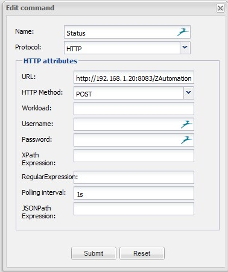

Hi,
I've openremote 2.1 with razberry z-way 1.5 RC3.
All work fine, but...
Randomly all my sensor not work....
i've this msg.
2014-04-18 17:44:20,102 ERROR HTTP\-Thread\-8: Requested sensor id '84' was not found. Defaulting to 'N/A'.
2014-04-18 17:44:20,159 ERROR HTTP\-Thread\-8: Requested sensor id '86' was not found. Defaulting to 'N/A'.
2014-04-18 17:44:20,216 ERROR HTTP\-Thread\-8: Requested sensor id '82' was not found. Defaulting to 'N/A'.
2014-04-18 17:44:20,297 ERROR HTTP\-Thread\-8: Requested sensor id '89' was not found. Defaulting to 'N/A'.
2014-04-18 17:44:20,367 ERROR HTTP\-Thread\-8: Requested sensor id '88' was not found. Defaulting to 'N/A'.
if I delete the panel and create a new one, It work for a time .
But after some time the pb come back.
any suggestions?
Thk in advance.
{kind=link}
{kind=link}
{kind=link}
{kind=link}
{kind=link}
|
Personally I would stay away from these 1.5.x releases of Z-Way. They are still doing major rewrites on important sections of their code (see latest message on this). Originally announced for a January 2014 release, on past experience I don't expect a stable well documented product before this summer. That is a pity, because I still believe the product does have potential if adequately supporterd. Coming back to your question:
|
|
Hi Pietra, I have 25 logical sensors and 13 logical devices on openremote designer. all devices work fine in expert UI of z-way and all http commands work fine on web browser.. When i create à new panel in openremote Designer, all devices work fine. but after some time, i have this msg. I can see all values of all devices on the log => I think, only the sensor are not working, i haven't the status of the devices ( no feed back). |
|
Hmmm, strange problem. Unfortunately I do not have any of these devices, so I can't give my solution. From your message I understand that all statuses don not work after an initial short period. So can you give for example screenshots from how you configured the Fibaro dimmer:
|
|
Hi thk for your response.  the command: the sensor: the slider: the panel: Thk for your help. |
|
I haven't used the ZAutomation OpenRemote module yet, but as it is derived from my RaZ-OR module, I can more or less compare. I think you have mixed up the commands. So to set the dimmer my guess is that you should use: http://192.168.1.20:8083/ZAutomation/OpenRemote/SwitchMultilevelSet/12/0/{$param}
while for reading the status you should read the other command |
|
Hi Pieter, |
You probably did not. This forum does not display curly brackets and a few other things. For better readability in future posts you should enclose your code within {code}..{code} tags (see markup instructions). Do not place a / inside the end tag. |
{kind=link}